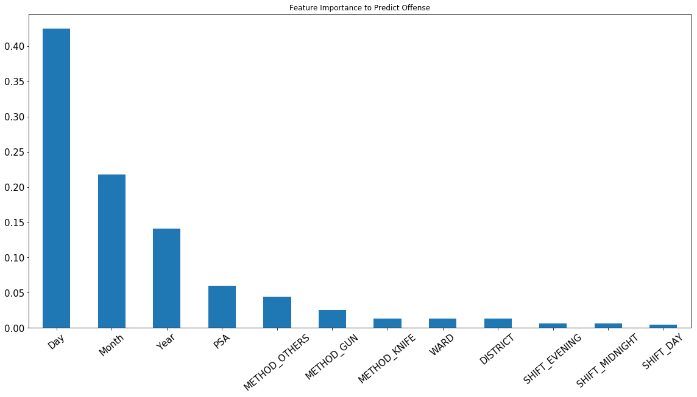

Since we observe some interesting trends between reported time/location and offense, we want to use all detail of accidence to predict the type of offense. Here I used three different classifiers: LogisticRegression, DecisionTreeClassifier and RandomForestClassifier.
